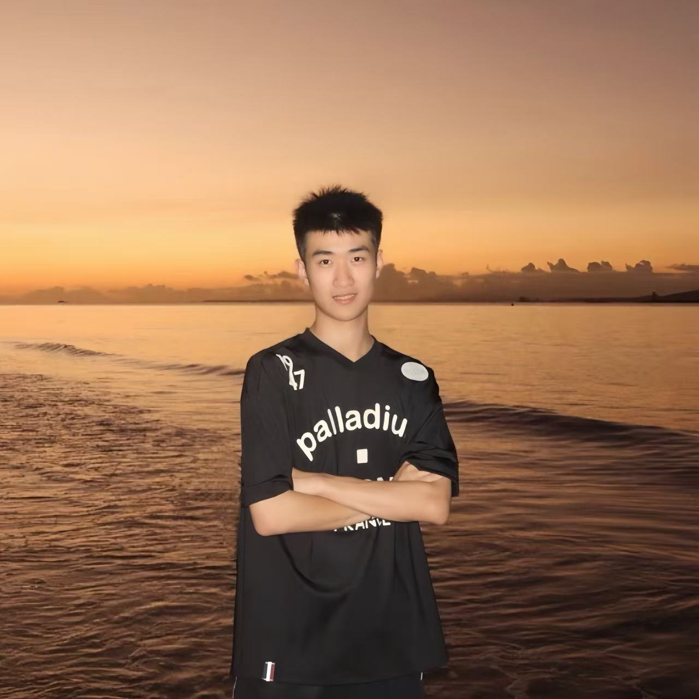

About Our Team
We are Information Science students at UW-Madison, passionate about exploring the intersection of technology, data, and social equity.

Wuziyang Zhang
Economics & Information Science
Who I Am
I'm pursuing a dual major in Economics and Information Science. This unique combination allows me to explore how data, systems, and human behavior intersect in our increasingly digital world.
I'm deeply interested in the ways technology shapes society, particularly in areas like artificial intelligence, product management, and the ethical implications of digital innovation. My goal is to work at the intersection of technology and social impact, creating products and systems that are not only functional but also equitable and inclusive.
My Interests
My passion for technology extends beyond coding and algorithms. I'm fascinated by how technological decisions impact real people's lives, especially those from marginalized communities. Through my studies in economics, I've learned to analyze systems and incentives. Through information science, I've learned how information flows, how interfaces shape behavior, and how design choices can either reinforce or challenge existing inequalities.
I'm particularly drawn to product management because it sits at the nexus of technology, business, and human needs. Product managers must balance technical feasibility with user experience and business objectives, but I believe they also have a responsibility to consider equity and social impact in every decision.
Reflection from Project 1
Working on Project 1 was an eye-opening experience that challenged many of my assumptions about bias and fairness. Before this course, I understood bias primarily as an individual problem—something that "bad people" had. But through our readings and discussions, I've come to understand that implicit bias is far more pervasive and subtle.
One of the most striking realizations was recognizing how my own background influences my perspectives on technology. As someone interested in AI and product development, I had to confront how easily bias can be embedded in algorithms and design choices, often unintentionally. The systems we build reflect the assumptions and blind spots of their creators, which is why diverse perspectives in tech are not just a nice-to-have but a necessity.
Understanding Intersectionality
My understanding of intersectionality has deepened through both academic study and personal experience. Growing up, I witnessed how different aspects of identity—race, class, education level, and nationality—interact in complex ways to shape people's opportunities and experiences.
Key Insight
A person's access to technology isn't just about income, it's also shaped by their geographic location, language background, educational system, and cultural context. Someone might have the financial means to buy a computer but lack the support systems or educational background to use it effectively.
Looking Forward
As I continue my studies and prepare for a career in technology, I'm committed to bringing these insights with me. Whether I'm building AI systems, managing product development, or making strategic decisions, I want to ensure that equity and inclusion are central considerations, not just afterthoughts.
This website represents not just a course requirement, but a statement of values and intentions. It's a reminder to myself and others that technology is never neutral, and that we have both the opportunity and the responsibility to shape it in ways that serve everyone.
Matt Steines
Information Science with Data Science Certificate
Introduction
Hi! I'm Matt Steines. I am a senior here at UW-Madison in my final semester. I am getting a degree in Information Science with a certificate in Data Science. My coursework has varied from machine learning, to statistical modeling to learning about data visualization with Tableau. I hope to take my well-rounded degree and find a job that suits my skillset well.
My Interests
As a kid I was always very interested in tech, and felt that studying it and its interactions with people was the clear next step for me. My coursework has been quite varied so I'm excited to see what's out there.
Beyond Tech
Tech aside, I'm a huge fan of music! Specifically, I love to collect records and talk about music. There's something special about the tangible experience of vinyl records and the stories behind each album.
Technical Background
My experience with data science has given me a strong foundation in understanding how information systems work and how data shapes our digital world. Through courses in:
- Machine Learning: Understanding how algorithms learn from data and make predictions
- Statistical Modeling: Building models to analyze patterns and relationships in data
- Data Visualization (Tableau): Creating clear, compelling visual representations of complex data
These skills have prepared me to approach problems analytically while keeping the human element in understanding that behind every dataset are real people and real stories.
Reflection from Project 1
I learned a lot about internal bias, specifically with how we perceive the different fields (Liberal Arts vs. Sciences). The test itself wasn't overly impactful as much as the thoughts I had while taking it.
What surprised me the most was the realization that even as someone who sees themself as an open minded individual, I carry unconscious biases that influence how I interpret information and make decisions. By realizing this, I can hopefully have more objective viewpoints
Personal Reflection
The process of examining my own biases, especially those based around academic disciplines and how we value different types of knowledge has allowed me more to be more conscious of the need to approach problems from multiple perspectives. Technical skills are clearly important, but so is understanding the broader social context in which technology operates.
Looking Forward
I plan to apply both the hard skills and soft skills I've learned here at UW to maximize my potential in any role I take. Regardless of whether or not these soft skills actually apply directly to a specific job, I feel they are vastly important for my overall experience as a student and working person.
My diverse coursework in machine learning, statistics, and data visualization, combined with the critical thinking skills developed in courses like this, has prepared me to contribute meaningfully to creating technology that serves everyone equitably.
Our Shared Vision
Together, we bring alternative but complementary perspectives to understanding technology's role in society. Wuziyang's focus on economics and product management, combined with Matt's expertise in data science and machine learning, allows us to approach problems from both strategic and technical angles.
Why This Matters
As the next generation of technologists, we have both the opportunity and responsibility to shape how technology evolves. Through an educational focus on social knowledge on top of our technical skills, we can create a technological future that includes and benefits all.